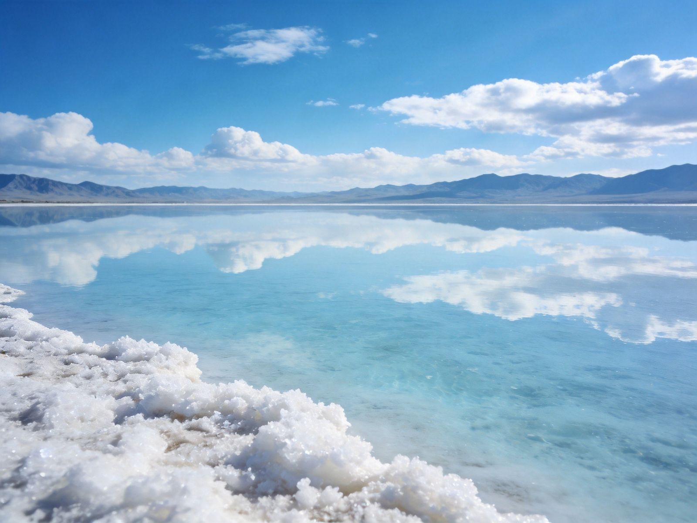

一分钟看懂先快速建立整体认知
CHAKA AT A GLANCE茶卡盐湖位于青海海西乌兰县，海拔约 3000 米，因湖水含盐量高、湖面如同镜面，能清晰倒映天空与雪山，被称为"中国的天空之镜"。核心玩法是大门乘小火车深入湖心盐滩，在红裙、蓝天、白云的经典画面里拍倒影。这里海拔不低，晴天无风才有最美倒影，行程安排要为天气留弹性。
🪞 天空之镜
🚂 盐湖小火车
👗 红裙经典机位
☀️ 防晒 + 抗高反
提示：茶卡适合顺路看、晴天看——从西宁到青海湖/大柴旦的环线多会经过，专程为它远赴则要看天气。